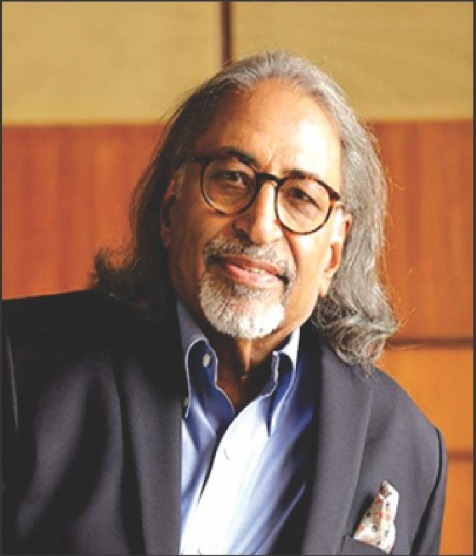

Some of the world I witnessed,
some of myself I lived…
कुछ जग बीती, कुछ खुद बीती

RAHIL (Rajinder Malhotra) is a retired corporate leader and former Group CEO of a large conglomerate. A poet at heart, his passion for writing poems and songs, as well as acting and directing plays, was ignited during his school and college days.
After over 45 years of working and traveling across the world, RAHIL now turns his attention inward — capturing fleeting moments, the beauty of nature, and the intricacies of human connection. His poetry invites readers to pause, reflect, and reconnect with the emotions often overlooked in the rush of life.
This collection is a soulful exploration of life's subtleties — a journey through feelings, reflections, and quiet observations.
Everyday emotions, unspoken questions, and silent musings.
Poems and conversations in his own voice.